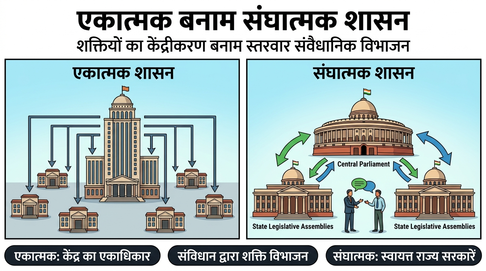
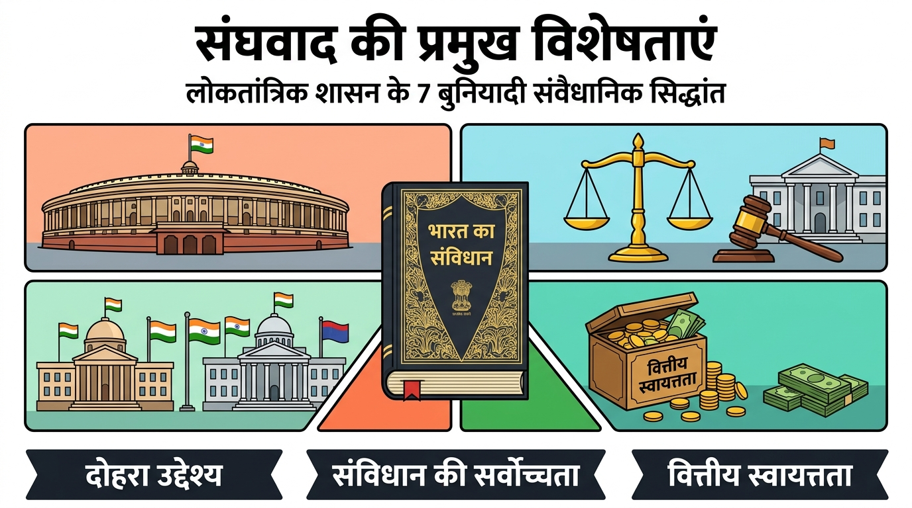
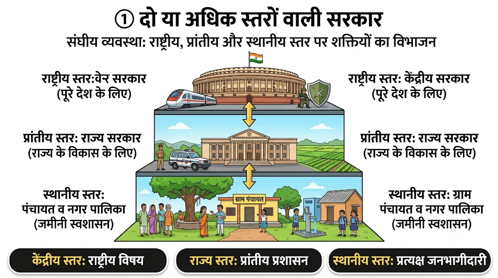
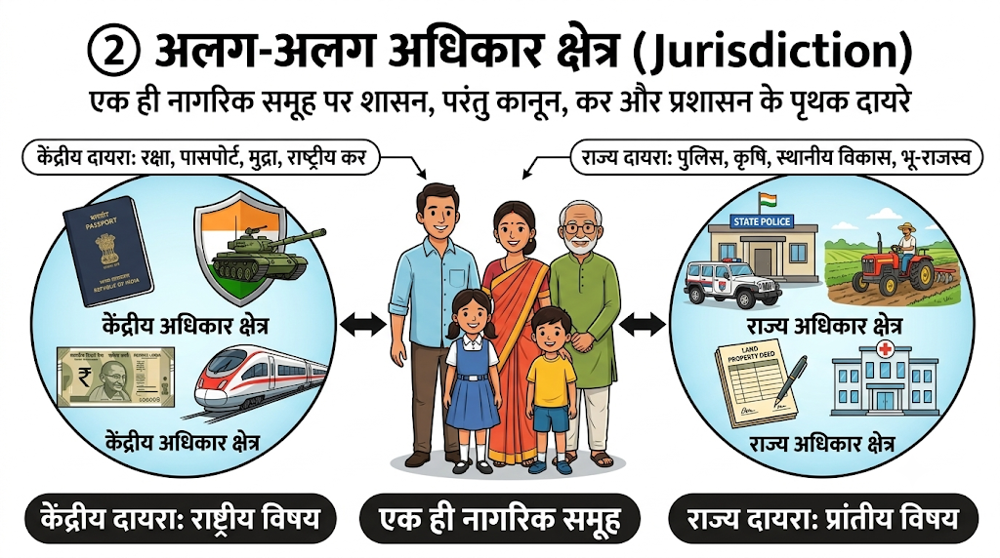
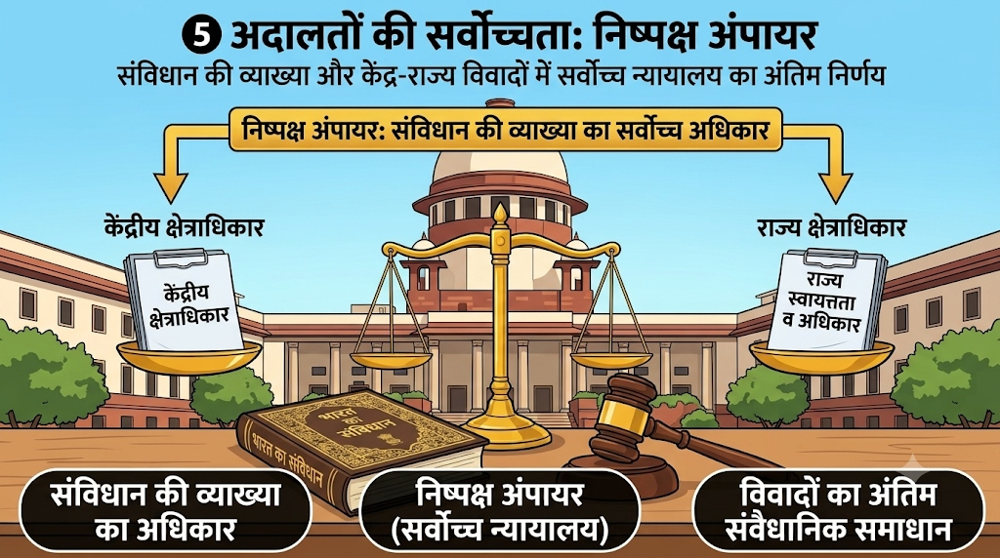
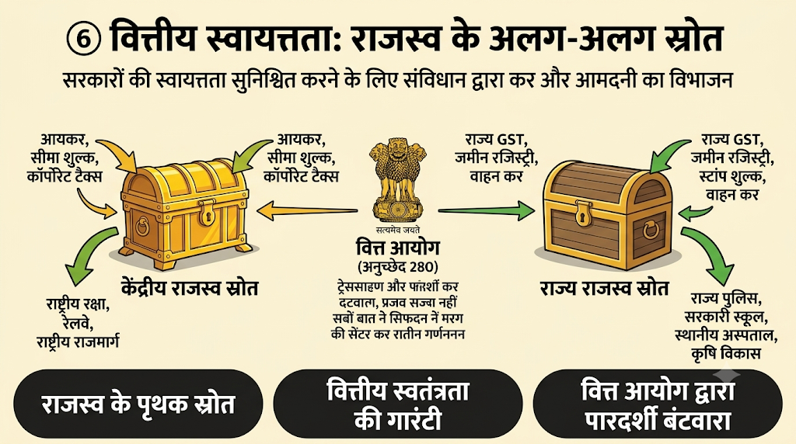
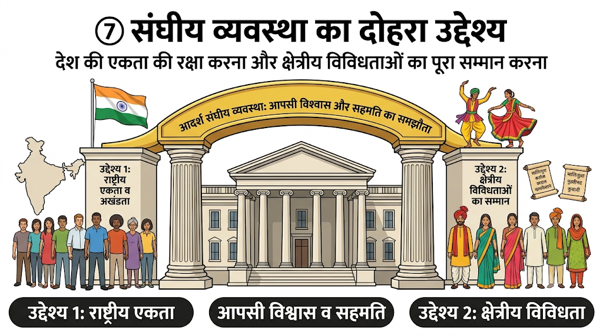
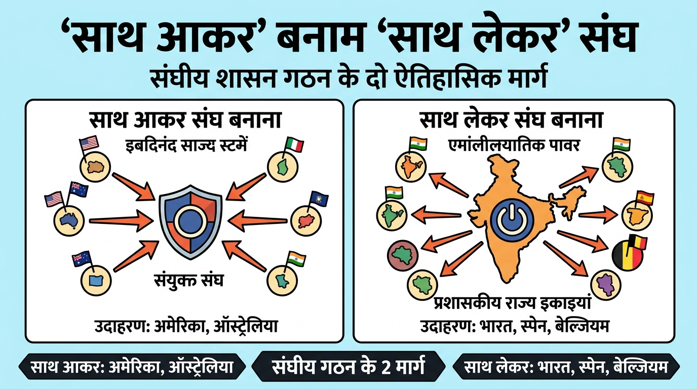
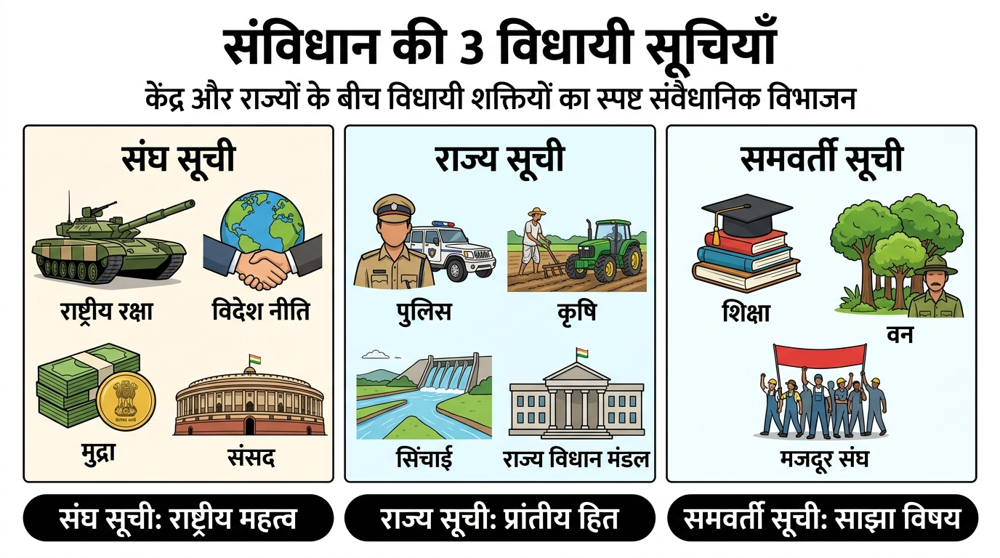

संघवाद शासन की वह व्यवस्था है जिसमें सत्ता का विभाजन एक केंद्रीय प्राधिकरण और देश की विभिन्न प्रांतीय या क्षेत्रीय इकाइयों के बीच होता है। बेल्जियम में हमने देखा कि केंद्र सरकार की शक्तियों को प्रांतीय सरकारों को सौंपा गया, जबकि श्रीलंका में एकात्मक व्यवस्था बनी रही।

किसी भी लोकतांत्रिक देश में संघीय व्यवस्था (Federal System) की पहचान उसके संविधान में अंतर्निहित 7 बुनियादी सिद्धांतों से होती है। ये सातों सिद्धांत मिलकर केंद्र और राज्यों के बीच शक्तियों का ऐसा संतुलन बनाते हैं जो देश को अखंड रखते हुए लोकतंत्र को जमीनी स्तर तक मजबूत करता है:

संघात्मक शासन व्यवस्था का पहला और अनिवार्य नियम यह है कि यहाँ शासन की शक्ति किसी एक अकेले व्यक्ति या संस्था के हाथ में केंद्रित नहीं होती। शासन कम से कम दो स्तरों (Two Tiers) में बंटा होता है:
- केंद्रीय स्तर (National Level): पूरे देश के लिए एक केंद्रीय सरकार होती है, जिसके जिम्मे राष्ट्रीय महत्व के विषय (जैसे राष्ट्रीय सुरक्षा, विदेश मामले, रेलवे व संचार) होते हैं।
- प्रांतीय स्तर (State Level): प्रत्येक राज्य या प्रांत के लिए राज्य सरकार होती है, जो उस राज्य के दैनिक प्रशासनिक कार्यों, कानून-व्यवस्था, कृषि और स्थानीय विकास की देखभाल करती है।
- तीसरा स्तर (जमीनी स्वशासन): भारत जैसे विशाल और विविधतापूर्ण देश में विकेंद्रीकरण के तहत 1992 में एक तीसरा स्तर भी जोड़ा गया—पंचायती राज (ग्रामीण) और नगर पालिकाएं (शहरी)।

विभिन्न स्तरों की सरकारें एक ही नागरिक समूह पर शासन करती हैं, लेकिन कानून बनाने, कर वसूलने (Taxation) और प्रशासन चलाने का प्रत्येक स्तर का अपना निश्चित और संविधान-सम्मत 'अधिकार क्षेत्र' (Jurisdiction) होता है:
- उदाहरण: एक भारतीय नागरिक पर केंद्र सरकार के कानून (जैसे आयकर, पासपोर्ट नियम, सेना भर्ती, राष्ट्रीय राजमार्ग नियम) भी लागू होते हैं और उसी नागरिक पर अपनी राज्य सरकार के नियम (जैसे राज्य पुलिस, कृषि नीतियां, जमीन की रजिस्ट्री, स्थानीय बिक्री कर) भी लागू होते हैं।
- कोई भी स्तर दूसरे के संवैधानिक कार्यक्षेत्र में अनावश्यक हस्तक्षेप नहीं कर सकता।

विभिन्न स्तरों की सरकारों के अधिकार क्षेत्र किसी प्रधानमंत्री या मुख्यमंत्री की निजी इच्छा पर निर्भर नहीं होते, बल्कि संविधान में स्पष्ट रूप से लिखित होते हैं:
- संवैधानिक अस्तित्व की गारंटी: संविधान प्रत्येक स्तर की सरकार के अस्तित्व (Existence) और उसके प्राधिकार (Authority) को कानूनी सुरक्षा की गारंटी देता है।
- एकात्मक देशों (जैसे श्रीलंका या ब्रिटेन) की तरह केंद्र सरकार जब चाहे तब राज्य सरकारों को एक साधारण आदेश से समाप्त नहीं कर सकती।
संविधान के बुनियादी और संघीय प्रावधानों को कोई भी एक स्तर की सरकार अकेले नहीं बदल सकती:
- कठोर संशोधन प्रक्रिया (Rigid Amendment): यदि केंद्र सरकार चाहे कि वह राज्यों के अधिकार छीन ले या अपनी शक्तियां मनमाने ढंग से बढ़ा ले, तो वह अकेले ऐसा नहीं कर सकती।
- अनिवार्य शर्त: संघीय प्रावधानों में किसी भी बदलाव के लिए संसद के दोनों सदनों में 2/3 विशेष बहुमत के साथ-साथ कम से कम 50% (आधे) राज्यों की विधानसभाओं की लिखित मंजूरी अनिवार्य होती है।
अदालतों को संविधान और विभिन्न स्तरों की सरकारों के अधिकारों की व्याख्या (Interpretation) करने का सर्वोच्च अधिकार प्राप्त है:
- अंपायर की भूमिका: यदि विभिन्न स्तरों की सरकारों के बीच शक्तियों या सीमा को लेकर कोई विवाद होता है, तो सर्वोच्च न्यायालय (Supreme Court) निष्पक्ष अंपायर की तरह संविधान की व्याख्या करता है और उसका निर्णय अंतिम व सर्वमान्य होता है।
- न्यायपालिका की स्वतंत्रता यह सुनिश्चित करती है कि केंद्र सरकार राज्यों के अधिकारों का हनन न कर सके।

सरकारों की स्वायत्तता केवल कागजी न रहे, इसलिए संविधान में प्रत्येक स्तर की सरकार के लिए राजस्व (कमाई) के अलग-अलग स्रोत स्पष्ट रूप से तय किए गए हैं:
- वित्तीय स्वतंत्रता: राज्य सरकारों को अपने दैनिक कार्यों, स्कूलों, अस्पतालों और पुलिस व्यवस्था के लिए केंद्र की दया या खैरात पर निर्भर नहीं रहना पड़ता।
- संविधान सम्मत बंटवारा: केंद्र के पास आयकर, सीमा शुल्क, कॉर्पोरेशन टैक्स जैसे बड़े राष्ट्रीय स्रोत हैं; जबकि राज्यों के पास राज्य GST, भू-राजस्व, स्टांप शुल्क और वाहन कर जैसे स्रोत हैं। इसके अलावा वित्त आयोग (Finance Commission) केंद्रीय करों में राज्यों की निष्पक्ष हिस्सेदारी तय करता है।

संघीय शासन व्यवस्था दो परस्पर जुड़े हुए पवित्र उद्देश्यों को एक साथ सिद्ध करती है:
- पहला उद्देश्य (राष्ट्रीय एकता): देश की एकता और अखंडता की रक्षा करना और उसे निरंतर सुदृढ़ बनाना।
- दूसरा उद्देश्य (क्षेत्रीय विविधता का सम्मान): देश के भीतर मौजूद भाषाई, सांस्कृतिक और प्रांतीय विविधताओं का पूरा सम्मान करना और उन्हें फलने-फूलने का अवसर देना।
- आदर्श संघवाद का आधार: एक सफल संघीय व्यवस्था के दो मुख्य तत्व हैं—आपसी विश्वास (Mutual Trust) और साथ रहने की सहमति (Agreement to live together)।


| तुलना का आधार | साथ आकर संघ बनाना (Coming Together) | साथ लेकर संघ बनाना (Holding Together) |
|---|---|---|
| गठन का तरीका | स्वतंत्र राष्ट्र अपनी संप्रभुता व सुरक्षा बढ़ाने हेतु अपनी मर्जी से मिलकर एक बड़ा संघ बनाते हैं। | एक बड़ा देश अपनी आंतरिक विविधता को ध्यान में रखते हुए केंद्र और राज्यों में शक्तियां बांटता है। |
| शक्तियों का संतुलन | सभी प्रांतों/राज्यों को समान अधिकार होते हैं और वे केंद्र जितने ही शक्तिशाली होते हैं। | राज्यों की तुलना में केंद्र सरकार अधिक शक्तिशाली होती है; कुछ राज्यों को विशेष अधिकार भी मिलते हैं। |
| उदाहरण देश | संयुक्त राज्य अमेरिका (USA), स्विट्जरलैंड, ऑस्ट्रेलिया। | भारत 🇮🇳, स्पेन, बेल्जियम। |


💡 बोर्ड परीक्षा हेतु अति-महत्वपूर्ण तथ्य (Quick Exam Takeaways)
- एकात्मक शासन: ब्रिटेन, श्रीलंका, चीन (केवल 1 केंद्रीय सरकार)।
- संघात्मक शासन: भारत, अमेरिका, बेल्जियम, कनाडा (2 या अधिक स्तर)।
- साथ आकर (Coming Together): USA, स्विट्जरलैंड, ऑस्ट्रेलिया।
- साथ लेकर (Holding Together): भारत, स्पेन, बेल्जियम।
- संघ सूची: रक्षा, विदेश मामले, बैंकिंग, मुद्रा, संचार (केवल केंद्र)।
- राज्य सूची: पुलिस, व्यापार, कृषि, सिंचाई, जेल (केवल राज्य)।
- समवर्ती सूची: शिक्षा, वन, मजदूर संघ, विवाह (केंद्र + राज्य दोनों; टकराव में केंद्र मान्य)।
- 1992 विकेंद्रीकरण संशोधन: 73वां (पंचायती राज) व 74वां (नगर पालिका) अधिनियम, 33% महिला आरक्षण।